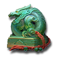
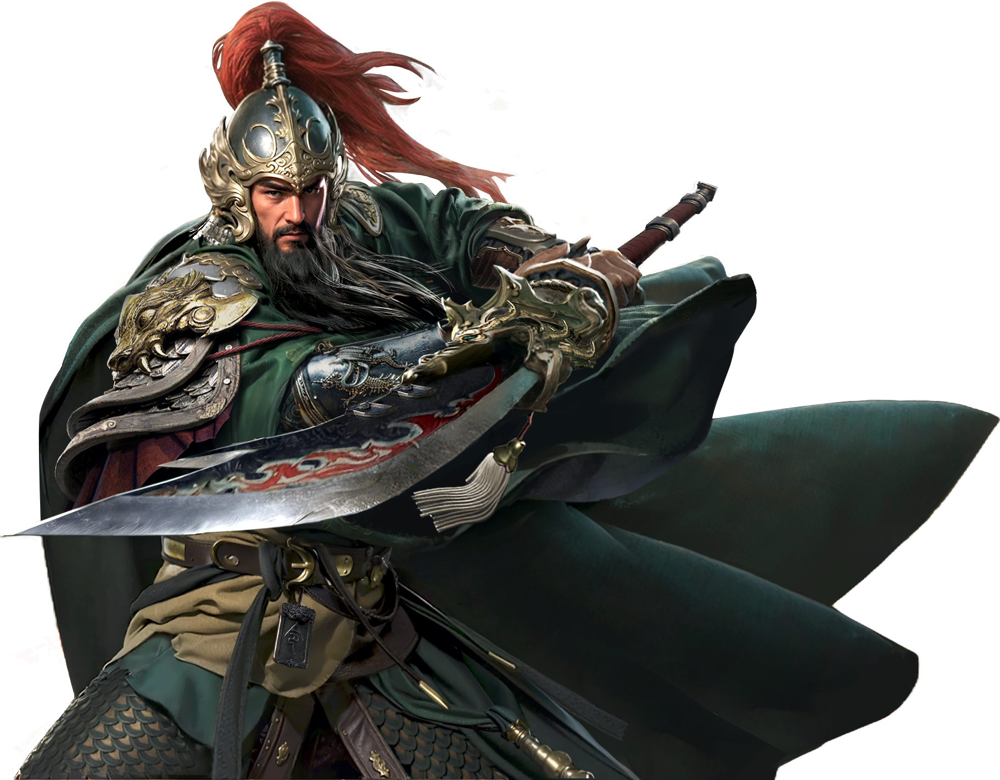

步入亂世,預約即送豪華新手禮
- 01 登入就送 活動期間內於活動頁面預約登錄《三國群英傳-策定九州》，首次登入時即可獲得 SSR 貂蟬。
- 02 全服新兵禮 只要登入即可獲得玉璽、元寶、令牌與隨機寶箱等實用資源。

龍紋玉璽
x1
斬妖除魔,升級贏雙重寶匣
活動期間內，角色達指定等級，即可依序領取「月牙花果山寶匣」與「白銀戰場寶匣」。 多種強力裝備、坐騎與外觀任你選擇。
角色達 15 級
月牙花果山寶匣
紫品武器箱 x1
坐騎：白狐 x1
強化石 x50
綁元 x200
角色達 30 級
白銀戰場寶匣
橙品武器箱 x1
稀有披風外觀 x1
坐騎升星石 x20
洗煉石 x100
※ 每一帳號僅限領取一次，實際獎勵內容以遊戲內公告為準。

月光寶盒,翻轉命運抽豪禮
完成每日任務與副本挑戰，可獲得「月光碎片」，集滿一定數量即可啟動月光寶盒，有機會獲得永久稱號、限定時裝與稀有坐騎。
普通寶盒
- · 紫品裝備、強化石、銅錢
- · 日常消耗品
稀有寶盒
- · 橙品武器、限定稱號
- · 稀有坐騎、時裝外觀
※ 月光寶盒僅於活動期間開放，詳細獎項與機率請見遊戲內【活動說明】。